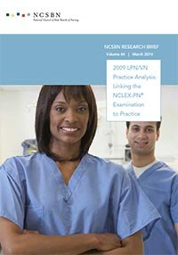
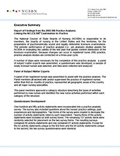
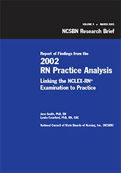

Practice Analyses
Practice Analyses
NCSBN performs job (practice) analysis studies every three years. These studies are used as the basis for the development of the NCLEX-RN and NCLEX-PN test plans. Watch the NCLEX Webinar on Scope of Practice, Practice Analysis and Knowledge, Skills and Abilities (English and French).
-
Report of Findings from the 2018 LPN/VN Nursing Knowledge Survey (Vol. 76)
This study identifies the knowledge needed by newly licensed practical/vocational nurses (LPN/VNs). The results of this study (i.e., the important knowledge statements) will be used to inform item development.
2019 | Research Item
-
2018 LPN/VN Practice Analysis: Linking the NCLEX-PN Examination to Practice (Vol. 75)
This periodic performance of practice analyses (i.e., job analysis) studies assists NCSBN in evaluating the validity of the test plan that guides content distribution of the licensure examination. Because changes can occur in licensed practical/vocational nurse (LPN/VN) practice, practice analyses are conducted on a three-year cycle.
2019 | Research Item
-
Report of Findings from the 2017 RN Nursing Knowledge Survey
This study identifies the knowledge needed by newly licensed RNs. The results of this study will be used to inform item development.
2018 | Research Item
-
2017 RN Practice Analysis: Linking the NCLEX-RN Examination to Practice - US & Canada (Vol. 72)
This periodic performance of practice analyses (i.e., job analysis) studies assists NCSBN in evaluating the validity of the NCLEX-RN test plan that guides content distribution of the licensure examination. Because changes can occur in registered nurse (RN) practice, practice analyses are conducted on a three-year cycle. This publication analyzes the U.S. & Canadian nurse testing populations.
2018 | Research Item
-

2015 LPN/VN Practice Analysis: Linking the NCLEX-PN Examination to Practice (Vol. 67)
This periodic performance of practice analyses (i.e., job analysis) studies assists NCSBN in evaluating the validity of the test plan that guides content distribution of the licensure examination. Because changes can occur in licensed practical/vocational nurse (LPN/VN) practice, practice analyses are conducted on a three-year cycle.
2016 | Research Item
-

Report of Findings from the 2015 LPN/VN Nursing Knowledge Survey (Vol. 66)
This study identifies the knowledge needed by newly licensed practical/vocational nurses (LPN/VNs). The results of this study (i.e., the important knowledge statements) will be used to inform item development.
2016 | Research Item
-

2014 RN Practice Analysis: Linking the NCLEX-RN Examination to Practice - U.S. and Canada (Vol. 62)
A practice analysis study aims to investigate the applicability of the 2013 NCLEX-RN Test Plan. This periodic performance of practice analyses (i.e., job analysis) studies assists NCSBN in evaluating the validity of the test plan that guides content distribution of the licensure examination. Because changes can occur in registered nurse (RN) practice, practice analyses are conducted on a three-year cycle. This publication analyzes both the U.S. and Canadian nurse testing populations.
2015 | Research Item
-

Report of Findings from the 2014 RN Nursing Knowledge Survey (Vol. 63)
This study identifies the knowledge needed by newly licensed RNs. The results of this study (i.e., the important knowledge statements) will be used to inform item development.
2015 | Research Item
-

2013 Canadian RN Practice Analysis: Applicability of the 2013 NCLEX-RN Test Plan to the Canadian Testing Population (Vol. 60)
A practice analysis study aims to investigate the applicability of the 2013 NCLEX-RN Test Plan to the Canadian testing population. The study surveyed Canadian entry-level registered nurses (RNs) and found similar results with those obtained from U.S. entry-level RNs. It validates the applicability of the 2013 NCLEX-RN Test Plan to the Canadian testing population.
2014 | Research Item
-

2012 LPN/VN Practice Analysis: Linking the NCLEX-PN Examination to Practice (Vol. 58)
This periodic performance of practice analyses (i.e., job analysis) studies assists NCSBN in evaluating the validity of the test plan that guides content distribution of the licensure examination. Because changes can occur in licensed practical/vocational nurse (LPN/VN) practice, practice analyses are conducted on a three-year cycle.
2013 | Research Item
-
Report of Findings from the 2012 LPN/VN Nursing Knowledge Survey (Vol. 59)
This study identifies the knowledge needed by newly licensed practical/vocational nurses (LPN/VNs). The results of this study (i.e., the important knowledge statements) will be used to inform item development.
2013 | Research Item
-
2011 RN Practice Analysis: Linking the NCLEX-RN Examination to Practice (Vol. 53)
This periodic performance of practice analyses (i.e., job analysis) studies assists NCSBN in evaluating the validity of the test plan that guides content distribution of the licensure examination. Because changes can occur in registered nurse (RN) practice, practice analyses are conducted on a three-year cycle.
2011 | Research Item
-

Report of Findings from the 2011 RN Nursing Knowledge Survey (Vol. 55)
This study identifies the knowledge needed by newly licensed RNs. The results of this study (i.e., the important knowledge statements) will be used to inform item development.
2012 | Research Item
-

2009 LPN/VN Practice Analysis: Linking the NCLEX-PN Examination to Practice (Vol. 44)
This study describes LPN/VN practice to assist NCSBN in evaluating the validity of the test plan that guides content distribution of the licensure examination. (© 2010)
2010 | Research Item
-
Report of Findings from the 2009 LPN/VN Nursing Knowledge Survey (Vol. 43)
This study is to identify the knowledge needed by newly-licensed LPN/VNs. The results of this study (i.e., the important knowledge statements) will be used to inform item development. (© 2010)
2010 | Research Item
-

2008 Knowledge of Newly Licensed Registered Nurses Survey (Vol. 37)
This study is to identify the knowledge needed by newly licensed RNs. The results of this study (i.e., the important knowledge statements) will be used to inform item development. (© 2009)
2009 | Research Item
-

2008 RN Practice Analysis: Linking the NCLEX-RN Examination to Practice (Vol. 36)
This periodic performance of practice analyses (i.e., job analysis) studies assists NCSBN in evaluating the validity of the test plan that guides content distribution of the licensure examination. Because changes can occur in registered nurse (RN) practice, practice analyses are conducted on a three-year cycle. (© 2009)
2009 | Research Item
-

Report of Findings from the 2006 RN Post Entry-Level Practice Analysis (Vol. 29)
This study assists NCSBN in evaluating the validity of the NCLEX-RN examination. This study is the first to describe post entry-level RN practice to determine if there is a core set of RN activity statements that can be used to assess core RN competencies regardless of practice setting, specialty area and years of experience. (© 2007)
2007 | Research Item
-
2006 LPN/VN Practice Analysis: Comparability of Survey Administration Methods (Vol. 33)
This study compares the effectiveness of two survey administration methods of researching LPN/VN practice to assist NCSBN in evaluating the validity of the test plan that guides content distribution of the licensure examination. (© 2008)
2008 | Research Item
-

Report of Findings from the 2006 LPN/VN Practice Analysis Linking the NCLEX-PN to Practice (Vol. 28)
This study describes LPN/VN practice to assist NCSBN in evaluating the validity of the test plan that guides content distribution of the licensure examination.(© 2007)
2007 | Research Item
-
2005 RN Practice Analysis: Comparability of Survey Administration Methods (Vol. 32)
In order to improve the process of conducting practice analyses, NCSBN undertook this comparability study to investigate two different survey administration methods: the traditional paper-and-pencil, mail-based survey versus an electronic, Web-based survey. (© 2008)
2008 | Research Item
-

Report of Findings from the 2005 LPN/VN Post Entry-Level Practice Analysis (Vol. 26)
This study describes post entry-level LPN/VN practice with the intention of determining if there are core nursing activity statements for LPN/VNs regardless of practice setting, specialty practice area and/or years of experience (© 2007)
2007 | Research Item
-

Report of Findings from the 2005 RN Practice Analysis (Vol. 21)
The purpose of this practice analysis is to describe and compare the practice characteristics and activities of newly licensed registered nurses (RNs). The empirical findings are used to evaluate the 2007 NCLEX-RN Test Plan (© 2005).
2005 | Research Item
-

2005 RN Practice Analysis: NCSBN Executive Summary
NCSBN performs job (practice) analysis studies every three years. This is an executive summary of the 2005 RN Practice Analysis.
2005 | Publication
-

Report of Findings from the 2003 LPN/VN Practice Analysis: Linking the NCLEX-PN to Practice (Vol. 17)
This practice analysis describes and compares the practice characteristics and activities of newly licensed practical/vocational nurses (LPN/VNs). The empirical findings will be used to evaluate the 2005 NCLEX-PN Test Plan (© 2003).
2003 | Research Item
-

Report of Findings from the 2002 RN Practice Analysis Update (Vol. 9)
This practice analysis describes and compares the possible differences in the entry-level practices of newly licensed associate and baccalaureate degree nurses. (© 2004)
2003 | Research Item